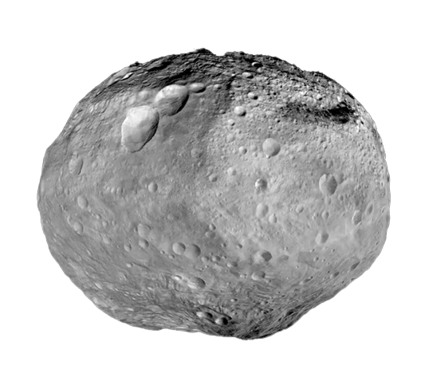
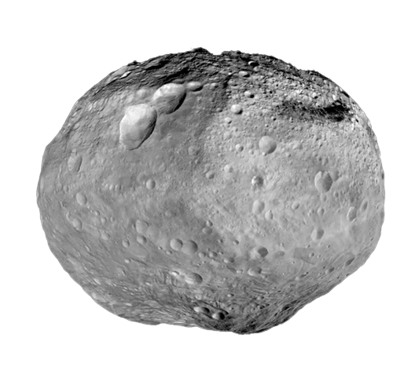

A complete journey to the Multiverse.
Big Bang Theory


 

The Big Bang Theory is the leading explanation for how the universe began. Simply put, it says the universe as we know it started with an infinitely hot and dense single point that inflated and stretched — first at unimaginable speeds, and then at a more measurable rate — over the next 13.7 billion years to the still-expanding cosmos that we know today.
</What Was The Big Bang?/> : https://www.youtube.com/watch?v=XSCrSkK2HcQ&t=305s </What is the Big Bang Theory?/> : https://www.space.com/25126-big-bang-theory.htmlString Theory
String theory is the idea in theoretical physics that reality is made up of infinitesimal vibrating strings, smaller than atoms, electrons or quarks. According to this theory, as the strings vibrate, twist and fold, they produce effects in many, tiny dimensions that humans interpret as everything from particle physics to large-scale phenomena like gravity.
</What is string theory?/> : https://www.space.com/17594-string-theory.html </Have We Really Found The Theory Of Everything?/> : https://www.youtube.com/watch?v=E4CsY5B3BoI&t=647s </Michio Kaku Explains The Mysteries of String Theory & Quantum Physics/> : https://www.youtube.com/watch?v=mzuQKQ2Wy3EM-Theory

M-theory is like an uber-theory of strings, showing how all five string theories are really just small corners of a much larger, and much more mysterious, theory. We used to think of the five string theories as separate planets, with our theoretical and mathematical explorations confined to little islands on those planets. But M-theory revealed that all those islands actually shared the same, much larger, planet all along.
</String theory vs. M-theory: A showdown to explain our universe./> : https://www.space.com/string-theory-11-dimensions-universe.html </Where Are All The Hidden Dimensions?/> : https://www.youtube.com/watch?v=9If-K9R3Ka4&t=991sTheory of Relativity

The theory of relativity usually encompasses two interrelated physics theories by Albert Einstein: special relativity and general relativity, proposed and published in 1905 and 1915, respectively. Special relativity applies to all physical phenomena in the absence of gravity. General relativity explains the law of gravitation and its relation to the forces of nature. It applies to the cosmological and astrophysical realm, including astronomy.
</What Actually Are Space And Time?/> : https://www.youtube.com/watch?v=yPVQtvbiS4Y&t=908s </Theory of Relativity - Explained in human language./> : https://medium.com/pragyan-blog/theory-of-relativity-explained-in-human-language-a59d98b3df48Block Universe Theory

The block universe theory which is supported by special relativity, claims time isn't the thing that we experience. According to theory, our universe is a block that contains everything in anywhere and anytime. In this context, past, present, and future are all real at the same time.
</Do the Past and Future Exist?/> : https://www.youtube.com/watch?v=EagNUvNfsUI </The block universe theory./> : https://www.abc.net.au/news/science/2018-09-02/block-universe-theory-time-past-present-future-travel/10178386Chaos Theory

Chaos theory is an interdisciplinary area of scientific study and branch of mathematics focused on underlying patterns and deterministic laws of dynamical systems that are highly sensitive to initial conditions, and were once thought to have completely random states of disorder and irregularities.
</Chaos theory explained: A deep dive into an unpredictable universe/> : https://www.space.com/chaos-theory-explainer-unpredictable-systems.html </Chaos: The Science of the Butterfly Effect/> : https://www.youtube.com/watch?v=fDek6cYijxIIs time travel possible?

Time travel is the hypothetical activity of traveling into the past or future. Time travel is a widely recognized concept in philosophy and fiction, particularly science fiction. In fiction, time travel is typically achieved through the use of a hypothetical device known as a time machine. The idea of a time machine was popularized by H. G. Wells' 1895 novel The Time Machine.
</Is time Travel Possible In Our Universe?/> : https://www.youtube.com/watch?v=JXZpac6TREw&t=1065s </Is time travel possible?/> : https://www.space.com/21675-time-travel.htmlMany-Worlds Interpretation

The many-worlds interpretation (MWI) is an interpretation of quantum mechanics that asserts that the universal wavefunction is objectively real, and that there is no wave function collapse. This implies that all possible outcomes of quantum measurements are physically realized in some "world" or universe./p>
</The Multiverse is real./> : https://www.youtube.com/watch?v=2bZi3Xm9tJE </The Many-Worlds Theory, Explained/> : https://thereader.mitpress.mit.edu/the-many-worlds-theoryThe Multiverse
The multiverse is the hypothetical set of all universes. Together, these universes are presumed to comprise everything that exists: the entirety of space, time, matter, energy, information, and the physical laws and constants that describe them.
</How Many Multiverses Are There?/> : https://www.youtube.com/watch?v=1jmNzlTd09E&t=3s </What is the multiverse-and is there any evidence it really exist?/> : https://www.nationalgeographic.com/science/article/what-is-the-multiverse